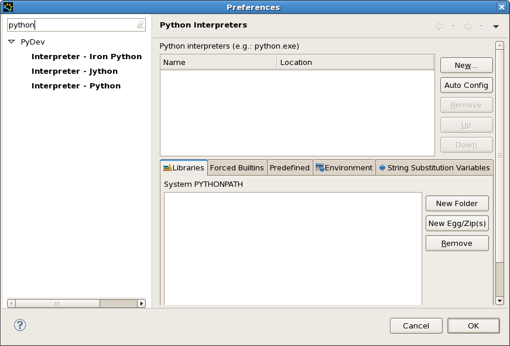
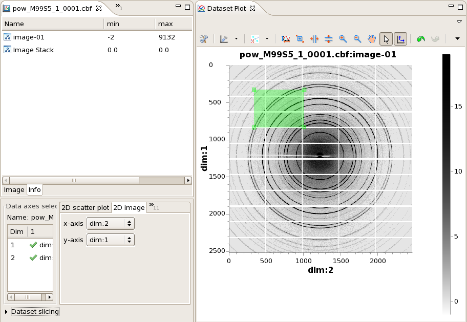
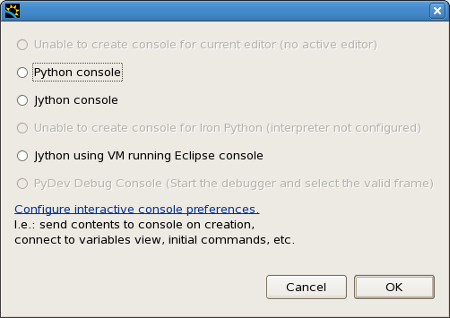
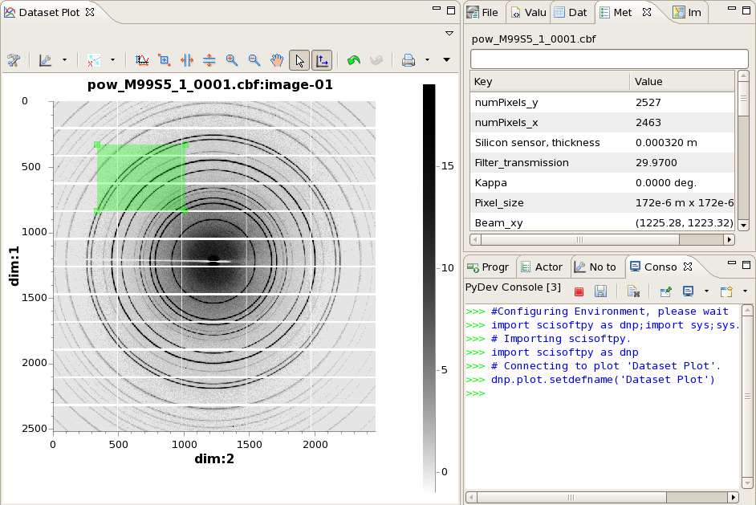
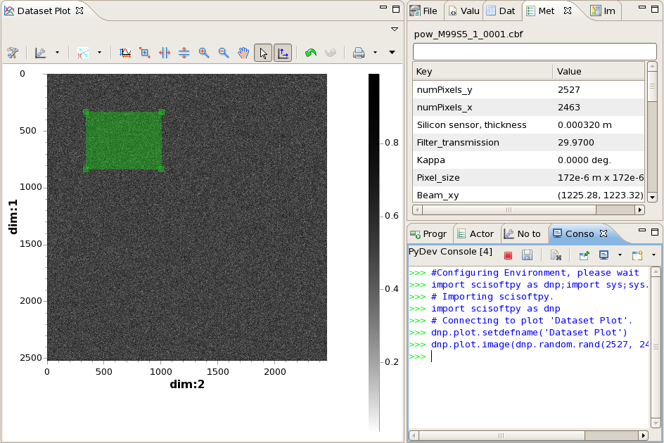
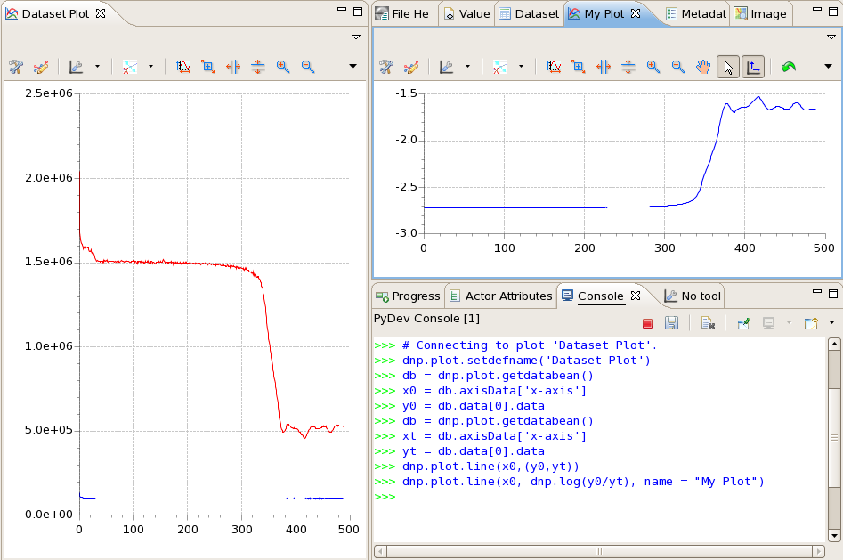
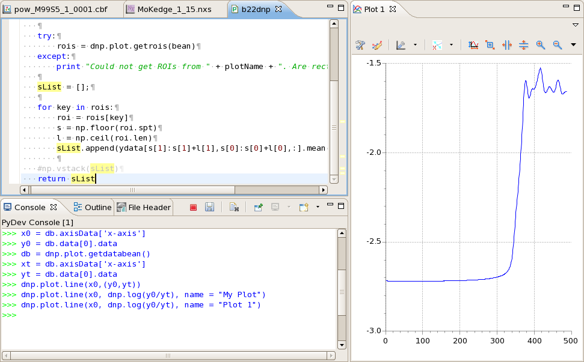

Session 3. DAWN Training - Python
Welcome to the third in the series of training sessions on how to use the DAWN software suite. In the last two sessions we learned how to open data files, select and slice datasets for plotting and investigate the plotted data using the tools system. There will always be data processing and analysis procedures that are useful but not available in DAWN. To allow custom data processing procedures to be used with DAWN's loading and visualisation elements the python scripting interface can be used.
This tutorial assumes no knowledge of python scripting or the NumPy/SciPy mathematical packages, but if you wish to fully understand the power of python for data processing try the tutorials here:
http://software-carpentry.org/4_0/python/index.html
http://docs.python.org/2/tutorial/
http://wiki.scipy.org/Tentative_NumPy_Tutorial
http://scipy-lectures.github.io/intro/index.html
The aims of this tutorial are :
-
Investigate scripting in the DExplore perspective
-
Connecting the Dataset Plot to the python console
-
Introduction to the scisoftpy module (dnp)
-
Developing code in the Python perspective
Python Scripting in DExplore
Most of the tutorial work so far has used the Data Browsing perspective and suggested that DExplore could be used in a similar fashion. This section of the training highlights one of the major differences between these two perspectives: Only DExplore can connect the plotted data to a python console.
-
Start DAWN, close all open files and switch to the DExplore perspective (if you don't remember how to do this, consult the previous tutorial pages)
-
Go to the Window menu, Preferences, type python in the filter box and select Interpreter - Python from the PyDev node
-
If no interpreter is shown go to Appendix I: Setting up Python in DAWN

-
When the python interpreter is configured, Open the pow_M99S5_1_0001.cbf used previously
-
Draw a box region of interest (ROI) on the plot

-
Expand the view menu by clicking the white down arrow at the top right of the plot view
-
Select "Open New Plot Scripting" from the view menu
-
In the dialogue box that appears select "Python console", if python is not available see Appendix I: Setting up Python in DAWN

-
A python console should appear and run some configuration scripts
-
The console is now connected to the Dataset Plot view
Remember the console view is just like any other view in DAWN, if the default position it appears in is not ideal just drag it somewhere else!

scisoftpy
All the useful methods for plotting data and getting plotted data from the console are contained in the scisoftpy python module. In the newly opened console you should see the line:
import scisoftpy as dnp
This line imports scisoftpy and binds it to the name dnp (to save you having to type scisoftpy all the time).
-
In the console type dnp.
Notice how once . is pressed the context assist shows all the methods in the dnp module
The first half of the training session deals with using the console with the plotting system. The methods for this can be found in dnp.plot
-
Type dnp.plot. what methods are shown?
Many of the methods in dnp.plot use the plot name to identify the plotting system we are using (DAWN can have many active plot views but they will all have different names). Because the console was opened using the action on "Dataset Plot" the console automatically sets this as the default name (with the line dnp.plot.setdefname('Dataset Plot'), which should be shown in the console). This means methods that require a name argument will use "Dataset Plot" if no name is supplied (more on this later).
Since most of the methods we are using in this tutorial are in dnp.plot you may want to import scisoftpy.plot as dpl to reduce the amount of typing required. If you do this, everywhere dnp.plot is written, replace it with dpl.
Beans
The python console communicates with the plotting system using little packages called beans. These packages carry all the information contained in the plotting system. There are two types of bean; data beans and gui (pronounced gooey, meaning graphical user interface) beans. Data beans are used to access the data displayed in a plot, gui beans allow non-data objects, such as regions of interest (ROIs) to be obtained.
The first bean we shall look at is the data bean.
The Data Bean: Images
-
In the console type:
db = dnp.plot.getd
Notice how the autocomplete shows the method getdatabean(name)
-
Select this method and delete the word name and press enter
db = dnp.plot.getdatabean()
db is now the data bean object (it doesn't have to be called db, it could be called anything you like, just put your chosen name on the left side of the equals sign). The variable name could be deleted since we want to use the default name (Dataset Plot) which was set when the console was opened.
-
Type the following code to extract the data from the bean into the variable "data"
data = db.data[0].data
What does this line mean? The databean contains a list of datasets (db.data) we are taking the first of these, since there is only one, ([0] - python uses zero-based indexing) and then we are taking the data from the dataset (hence data[0].data).
-
Type the following commands to investigate the data extracted from the plot
data.shape
data.min()
data.max()
Now the data has been collected from the plot, let's change it and push it back up. Take the log of the data (adding an offset so we don't log the negative values). We will use the log method in dnp, but if you are familiar with NumPy feel free to import it and use its log method. Both should work equally well.
-
Type the following command to log the data an push it back to the plot:
dnp.plot.image(dnp.log10(data+3))
You should notice the contrast of the image change since the data is now different. Any data can be pushed to the plotting system, not just a modified version of the data that was there.
-
Type the following command to push a random noise dataset the same size as the powder image to the plot
dnp.plot.image(dnp.random.rand(2527, 2463))

Data does not have to be sent back to the original plot, it can be sent to a new plot view by specifying the name in the call to plot.
-
Type the following command to push the original data to a new plot view
dnp.plot.image(data, name = "Plot 1")
-
Go to the Window menu, Show Plot View, Plot 1
Plot 1 should now appear showing the original data
-
Exercise 1: use what you have learnt so far to display the difference between the images in ref-testscale_1_001.img and ref-testscale_1_002.img in a plot view called "Difference"
The GUI Bean: Regions of Interest (ROIs)
Another useful feature of the plotting/python interface is the ability to draw region selections on the plot and then read these regions back into the python console.
Getting ROIs
Regions are stored in the GUI bean. The GUI holds a reference to the active (last clicked) ROI and a list of all ROIs.
-
Get the gui bean from the default plot by typing
gb = dnp.plot.getbean()
-
Get the active ROI from the bean
box = dnp.plot.getroi(gb)
-
Once the bean has been obtained see what happens when you type the following commands
box
box.spt
box.len
-
What does spt and len give you?
In Dawn you are not limited on how many ROIs can be drawn on the screen, how do you get multiple ROI's back from the plotting system?
-
Draw more box regions and refresh the bean
gb = dnp.plot.getbean()
-
Get the collection of ROI's from the gui
rois = dnp.plot.getrois(gb)
The object returned by getrois is a dictionary (a collection of key/item pairs) where each ROI is stored with its name as a key.
-
Iterate over the collection of regions printing the name of each ROI
for roi in rois:
print roi
The values printed are the keys for every ROI in the dictionary, to get something more useful than just the ROI name we need to use these keys to extract the actual ROIs.
-
Again iterate over the collection of regions, but this time extract each ROI and print its start point and length.
for roi in rois:
region = rois[roi]
print region.spt
print region.len
A single ROI can be extracted from the dictionary by calling region = rois[name], where in this case name equals 'Box 1'
The following ROIs are supported by the scripting interface; point, line, rectangle, sector, circle, ellipse.
-
Exercise 2 - draw some of the supported ROI types and investigate the values on each ROI (spt, len...), what other parameters do different ROIs have?
Modifying ROIs
To modify ROIs you should work with the ROI list not the active ROI.
-
Clear all the ROIs from the plot and draw a single rectangular ROI.
-
Get the GUI bean and as before get the ROI list from it.
-
Use the command below to set the length of Box 1 to 1000 pixels in each direction
rois['Box 1'].len = [1000.,1000.]
-
Push the GUI bean back up to the plotting system to see the changes
dnp.plot.setbean(gb)
Adding ROIs
To add a new ROI to the plot you need to create a new ROI, add it to the ROI list, update the ROI list in the GUI bean then push the bean back to the plot. The methods for creating new ROIs are in the dnp.plot.roi module. Again to save typing this can be imported as a short name (e.g.
import scisoftpy.roi as droi
) to save typing.
-
Get the GUI bean and ROI list.
-
Create a new rectangle ROI with length 500 pixels in each direction, set the start point as 50., 100. and call it "My Roi"
nroi = dnp.plot.roi.rectangle([500.,500.])
nroi.spt = [100.,50.]
nroi.name = "My Roi"
-
Add the new ROI to the ROI list, update the list in the GUI bean and push the bean to the plot:
rois.append(nroi)
dnp.plot.setrois(gb, rois)
dnp.plot.setbean(gb)
The
new ROI should now be shown on the plot.
The Data Bean: Line Traces
In this section we return to looking at the data bean, although this time with 1d line trace data rather than images.
Generally two datasets are important for processing line traces, the x and y axis data (images can also have axis data, and can be accessed in a similar fashion to that demonstrated below). In this example we will plot two line traces, extract the x and y data, confirm the x data are the same, then push some processed data back up to the plot.
-
Open the file MoKedge_1_15.nxs and plot I0 vs Energy.
-
Get the data bean from the plot and type:
db.axisData.keys()
-
To find the names of the available axis (in this case 'x-axis')
-
Store the x axis data in a variable x0:
x0 = db.axisData['x-axis']
-
Get the y data from the data bean using the same method as for the image data and assign it to y0.
-
Plot It vs Energy, get the data bean again and store the axis and data in xt and yt
-
Confirm xt and x0 are the same using the command all(xt == x0)
-
Use the console to plot y0 and yt against x0.
dnp.plot.line(x0,(y0,yt))
-
Get the databean and see how many datasets it contains by calling len(db.data)
BUG IN DAWN 1.2 - only one dataset is returned even though two are plotted, this is fixed in later versions (and the current nightly build June 2013)
-
Plot the log of (y0/yt) in a plot view called "My Plot"
dnp.plot.line(x0, dnp.log(y0/yt), name = "My Plot")

If this has been your first introduction to the Python programming language it is recommend you stop here and review the techniques demonstrated so far. Maybe try importing the numerical python package ( import numpy as np ), and experimenting with basic mathematical manipulation with data from the plot.
Further information on the scisoft python module can be found here: http://www.opengda.org/documentation/manuals/Diamond_SciSoft_Python_Guide/trunk/contents.html
All the interaction with the plotting system should work with Jython as well as Python, but the datasets returned will be Java objects not numpy arrays.
The Python Perspective
The python console and code editors in DAWN come from the Eclipse PyDev plugin (http://pydev.org/), making DAWN a powerful python developement IDE. PyDev has been combined with the scisoftpy module in the Python perspective. This perspective gives DAWN Matlab or Spyder-esque mathematical scripting functionality while allowing plotted data to be analysed with DAWN tool system.

Guidance on using the PyDev projects for writing and managing python code can be found on the PyDev website.
Test Yourself
-
How do you set the default plot name using scisoftpy?
-
What line of code would you type to get the third dataset from the data list in the data bean?
-
What command can you use to create a dataset of random data?
-
In the data bean, datasets are stored in a list. What are ROIs stored in, in the GUI bean?
-
What other methods are there in the view menu to help with scripting?
Appendix I: Setting up python in DAWN
-
If you are not already there go to the PyDev Python interpreter preferences:
-
Go to the Window menu, Preferences, type python in the filter box and select Interpreter - Python from the PyDev node
IF YOU ARE ON A DIAMOND LINUX WORKSTATION:
Click Auto Config
-
In the dialogue box that appears select python (not usr/bin/python or Enthought)
-
In the next dialogue click Select All, then OK
-
Click OK in the preferences window (python will link all the packages)
-
Python is now configured.
IF YOU ARE NOT ON A DIAMOND LINUX WORKSTATION:
-
Click Auto Config
-
In the dialogue box that appears either choose your python installation or if you don't have one select to install the Enthough python distribution
-
In the next dialogue click Select All, then OK
-
Click OK in the preferences window (python will link all the packages)
-
Python is now configured.
IF YOU ARE ON AN X64 WINDOWS SYSTEM
-
No Enthough distribution is available, download and install a different distribution (pythonxy...)